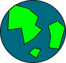

define-assets-from
| (require define-assets-from) | |
| package: define-assets-from | |
This module makes it easy to turn PNG files in a directory into provided identifiers that correspond to image? values.
More importantly, it makes it easier to accompany those Racket values with meta-data about where those assets came from – for example, to credit the artists. Meta-data can (if you use the tools documented on this page) follow those Racket values even as they pass through other modules, become renamed, modified, etc.
It eases the burden of creating and maintaining Racket packages that involve providing image assets whose license may require certain care to be taken with regard to crediting the original artist.
syntax
(define-assets-from path [id extra-meta-data] ...)
path : path-string?
Defines an identifier based on the PNG name
Provides the identifier
Provides documentation in a submodule called asset-docs, where (unlike srcdoc) each identifer is provided out as a list with the original identifier (as a symbol), the type of asset (currently only image?) and the appropriate way to document the image.
For example, in some file, try:
#lang racket (require define-assets-from) (define-assets-from "assets")
Put some a PNG file in a folder called assets.
You can add extra documentation for individual assets by passing in tuples after the folder name:
#lang racket (require define-assets-from) (define-assets-from "assets" (for-all-assets (para "Please credit Thomas Edison.")) (earth (para "Additionally credit Thomas Edison's cat.")))
The for-all-assets is a special value, which will cause the provided scribble to be displayed whenever that asset is documented. Adding such text to individual assets (like earth) can be accomplished by listing its identifier along with some associated scribble.
1 Generating Docs
Using define-assets-from in a module creates a submodule that is its Asset Doc Module. In other words, the main module supplies the assets; but the sub Asset Doc Module has associated documentation. By default the documentation just contains the original image and its name, but it can (for example) also describe how that asset looks, its type, its creator, its license, links to the artist’s homepage, etc. These must be values that are suitable for inclusion in a Scribble document, and can be converted to a defthing by using doc-asset or doc-all.
syntax
(doc-asset id)
(require define-assets-from) (require (submod define-assets-from/demo/assets asset-docs)) (doc-asset earth)
This gives:
Earth ImageThis asset was created by Stephen R. Foster and is in the public domain
syntax
(doc-all asset-doc-module)
The code will usually look something like this (yes, you should require the Asset Doc Module first):
(require (submod define-assets-from/demo/assets asset-docs)) (doc-all (submod define-assets-from/demo/assets asset-docs))
Earth ImageThis asset was created by Stephen R. Foster and is in the public domainQuestion Mark ImageThis asset was created by Stephen R. Foster and is in the public domainAdditional meta data added via (define-assets-from ...)
2 Asset Modules and Asset Doc Modules
If all you want to do turn a folder full of images into Racket identifiers with documentation, you don’t even need to keep reading. Just use the above tools.
But often, you may want to make higher-level Asset Modules that are composed from other Asset Modules using Racket’s Module System. If you use regular require and provide for that, you may lose track of the associated Asset Doc Modules.
Let’s call an Asset Module with an Asset Doc Module in a submodule called asset-docs a Canonical Asset Module iff the image ids in the main module match 1-to-1 with documentation ids in the Asset Doc Module.
That might sound complicated, but remember that this is exactly what define-assets-from creates for you. Any module whose identifiers are created thusly is automatically canonical.
If you want to combine two such modules you must take care to combine their two Asset Doc Modules in isomorphic ways inside a single Asset Doc Module called asset-docs.
(provide (all-from-out define-assets-from/demo/assets) (all-from-out define-assets-from/demo/assets2)) (require (only-in define-assets-from/demo/assets earth) (only-in define-assets-from/demo/assets2 logo)) (module asset-docs racket (provide (all-from-out (submod define-assets-from/demo/assets asset-docs) (submod define-assets-from/demo/assets2 asset-docs))) (require (only-in (submod define-assets-from/demo/assets asset-docs) earth) (only-in (submod define-assets-from/demo/assets2 asset-docs) logo)))
Now this file is also a Canonical Asset Module because the ids in the main module still match 1-to-1 with their intended documentation, and the Asset Doc Module is called asset-docs. In other words, all implied links to meta-data have been preserved.
To make that easier for most use-cases, wrap all your require and provide code in also-for-asset-docs to will ensure that whatever you do to the main module’s identifiers, you also do for the Asset Doc Module. The names must match in order for the links to documentation to be preserved.
syntax
(also-for-asset-docs #:asset-modules (module ...) require-and-provide-code ...)
This helps ensure that the modules that require and provide canonical asset modules are themselves canonical.
#lang racket (require define-asset-docs) (also-for-asset-docs #:asset-modules (define-assets-from/demo/assets define-assets-from/demo/assets2) (provide (all-from-out define-assets-from/demo/assets) (all-from-out define-assets-from/demo/assets2)) (require (only-in define-assets-from/demo/assets earth) (only-in define-assets-from/demo/assets2 logo)))
Now demo2/assets provides logo, which originally game from demo/assets2. Because we used also-for-asset-docs, the documentation has been passed along.
We can use doc-asset and doc-all as if demo2/assets was the original source of logo.
(require (submod define-assets-from/demo2/assets asset-docs)) (doc-asset logo)
This gives:
Logo Image
And to doc all:
(require (submod define-assets-from/demo2/assets asset-docs)) (doc-all (submod define-assets-from/demo2/assets asset-docs))
This gives:
Earth ImageThis asset was created by Stephen R. Foster and is in the public domainLogo Image
And of course, if you just want the logo image? asset, you don’t need to worry about asset-docs or documentation.
(require define-assets-from/demo2/assets) logo
This gives the image: